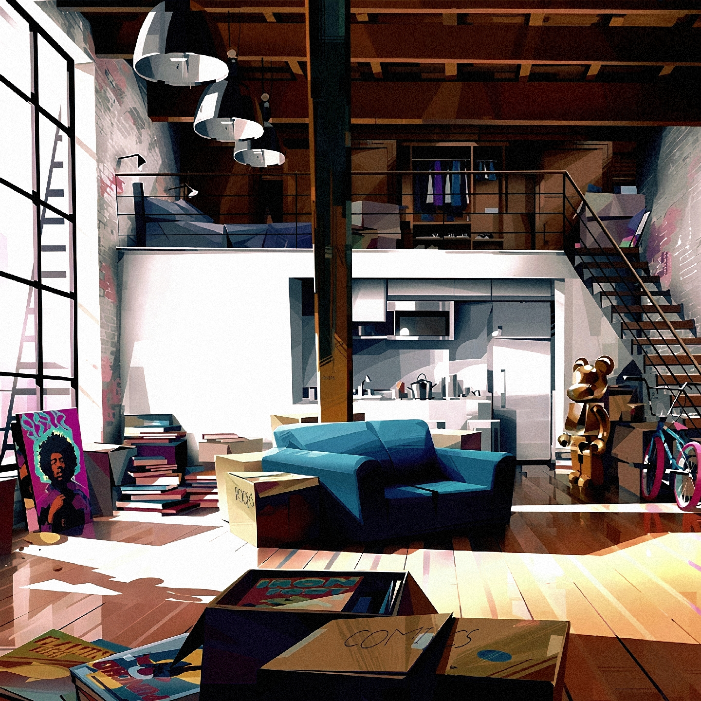
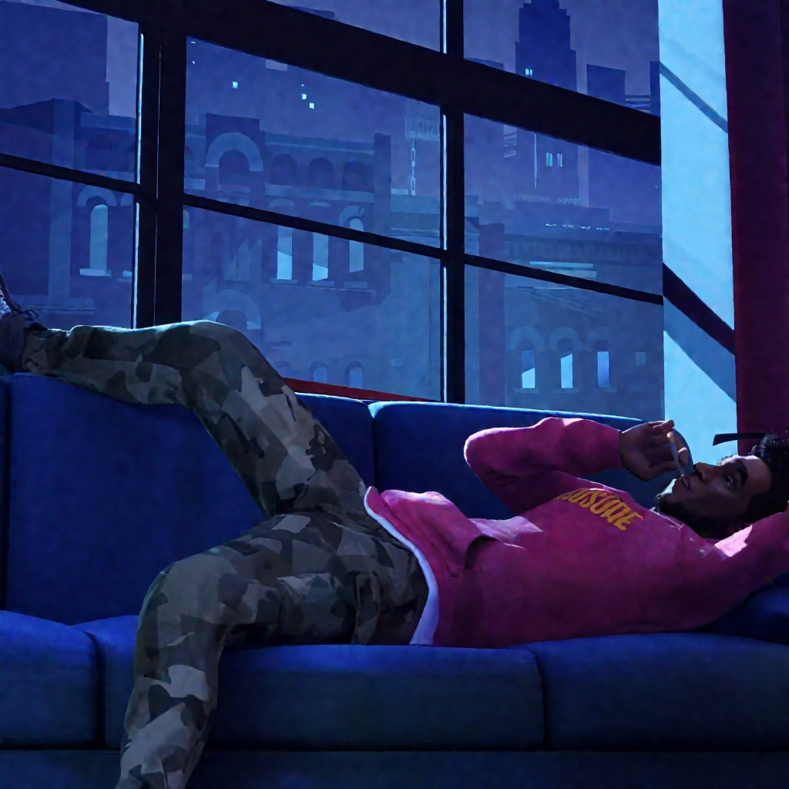
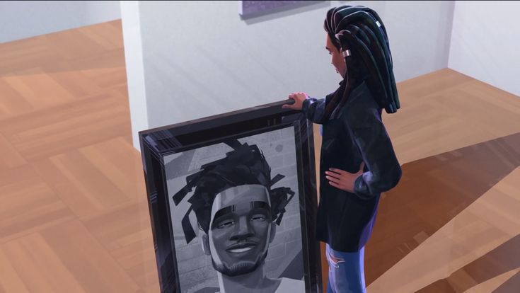
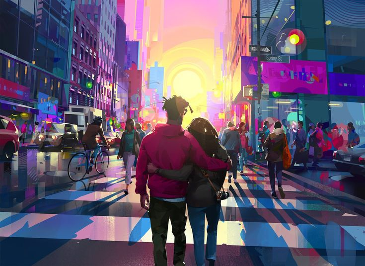
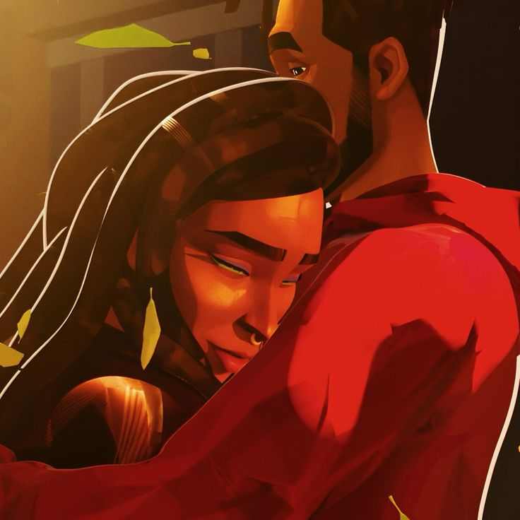

Jabari had always dreamed of seeing his art come alive, and now, standing in his
new Manhattan apartment, he felt the city hum beneath his feet. The skyline glittered like a canvas
waiting for his brush, and Cosmic Comics had just given him the chance to bring his creation, Mr.
Rager, to life. Success was finally within reach, yet the silence of his apartment reminded him that
ambition alone couldn’t fill the spaces of his heart.
The streets outside pulsed with energy, neon lights reflecting off wet pavement,
and Jabari felt both exhilarated and restless. New York was a place where dreams collided with
reality, and he was caught between the two, unsure whether his next chapter would be about art,
love, or something in between.

Jabari’s days were filled with sketches, meetings, and the constant chatter of
his friends Ky and Jimmy. They teased him, offered advice he rarely followed, and reminded him that
life wasn’t only about work. Yet Jabari’s mind was consumed by deadlines and the pressure to prove
himself worthy of the opportunity he’d been given.
Still, beneath his cool exterior, he longed for something more than recognition.
He wanted connection, something real that could anchor him in the whirlwind of success. The city
gave him everything—opportunity, inspiration, chaos—but it hadn’t yet given him love.
_ - Jabari, Jimmy and Ky (Scott Mescudi, Timothee Chalamet and Ty Dolla Sign).jpg)
.jpg)
That changed the night he met Meadow. She was his neighbor, a photographer with a
quiet confidence that drew him in immediately. Their first conversation was casual, but Jabari felt
the spark, the kind that made him wonder if fate had placed her next door on purpose.
Meadow’s art mirrored his own—raw, expressive, and deeply personal. In her
presence, Jabari felt seen in a way he hadn’t in years. The city’s noise faded when she spoke, and
for the first time, he thought maybe love could be as inspiring as art.
But the past has a way of resurfacing. Carmen, his ex, appeared like a ghost from
another life, reigniting old emotions Jabari thought he had buried. Their reunion was brief, but it
left him unsettled, torn between nostalgia and the possibility of something new.
Carmen represented unfinished business, a reminder of mistakes and missed
chances. Meadow, on the other hand, was a fresh canvas. Jabari knew he couldn’t paint both pictures
at once, yet his indecision threatened to blur the lines of his future.

With Meadow, everything felt effortless. They wandered through galleries, shared
late-night talks, and discovered the city together as if it belonged only to them. Jabari found
himself opening up, letting her into the parts of his life he usually kept guarded.
Their romance was painted in warm tones—laughter, intimacy, and the thrill of
discovery. For the first time, Jabari imagined a life where love and art weren’t separate pursuits
but intertwined, each fueling the other.
Yet even the brightest colors can fade. A misunderstanding over something as
simple as a hoodie spiraled into mistrust. Meadow pulled away, hurt by what she saw as dishonesty,
and Jabari was left staring at the empty space she left behind.
The breakup was sudden, sharp, and painful. Jabari realized how fragile love
could be, how quickly it could unravel when doubt crept in. He had gained success, but without
Meadow, it felt hollow.

.jpg)
Alone again, Jabari began to reflect. He replayed every moment, every word, and
recognized the ways he had failed to be honest and vulnerable. His friends urged him to fight for
Meadow, reminding him that real love was worth the risk.
For the first time, Jabari understood that ambition wasn’t enough. To truly grow,
he had to confront his fears, admit his mistakes, and choose love over pride.
Art became his language of redemption. Jabari poured his emotions into a mural,
each stroke a confession, each color a plea for forgiveness. The wall became his canvas, but more
importantly, it became his heart laid bare.
The mural wasn’t just about Meadow—it was about transformation. It showed that
Jabari was willing to be vulnerable, to let his art speak where words had failed.

When Meadow saw the mural, she felt the depth of Jabari’s sincerity. The walls between them fell, and their
reunion carried the quiet truth that love demands patience and trust. Meadow forgave him, and Jabari vowed
never to take her for granted again.
Hand in hand, they moved through the city, their futures bound together. His art and her photography
flourished, and love became their rhythm. Entergalactic ends not with drama, but with a celebration of
creativity, vulnerability, and the joy of finding someone who inspires you to live fully.

Love returned—not perfect,
but honest.
